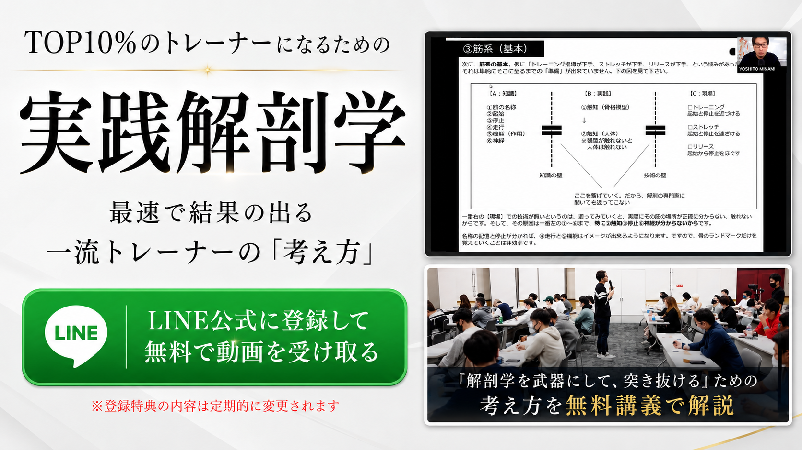
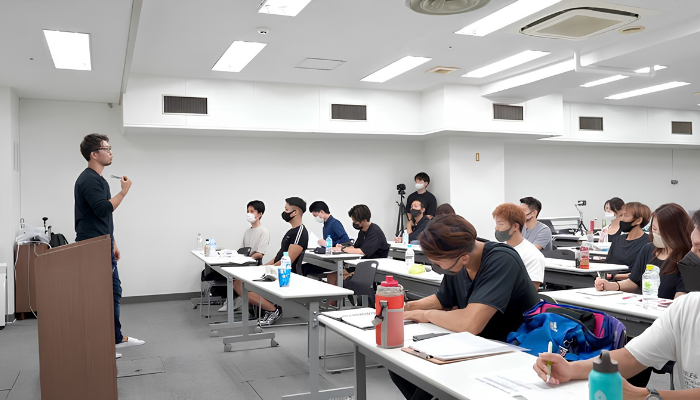
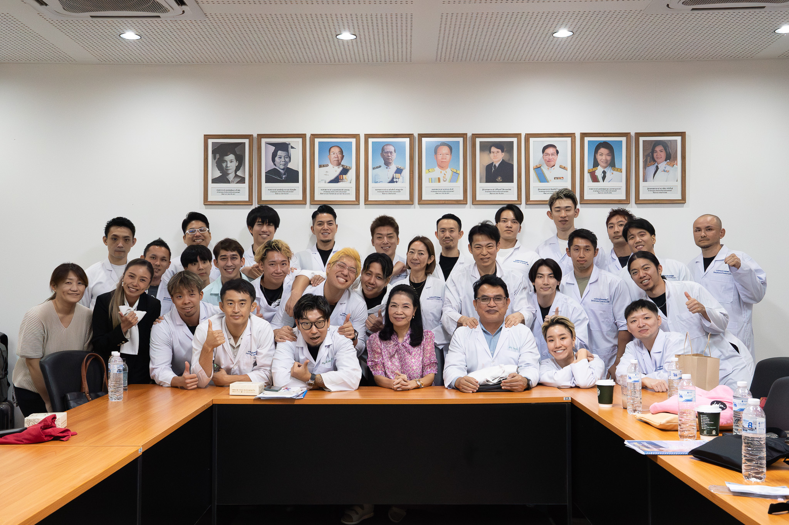
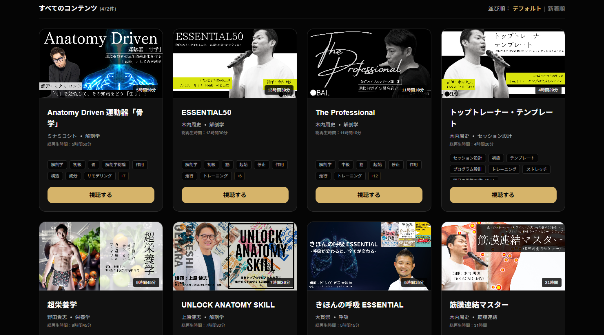

トレーナー・施術者向け｜無料動画講義
解剖学を、
学んだだけで終わらせていませんか？
筋肉の名称や起始停止を覚えるだけでは、現場での結果にはつながりません。解剖学を正しい順番で学び、トレーニング・ストレッチ・施術に使える「武器」へ変える考え方を無料講義で解説します。
FREE LECTURE
TOP10%のトレーナーになるための実践解剖学
最速で結果の出る、一流トレーナーの「考え方」
- LINE登録後すぐ視聴
- 無料
- スマートフォン対応

WHO IS THIS FOR
こんな学び方に
なっていませんか？
パーソナルトレーナー／理学療法士・作業療法士／柔道整復師・鍼灸師／整体師・セラピスト／ピラティス・ヨガインストラクター、そして学ぶ学生の方へ。
- 筋肉の名称や起始停止は覚えたが、現場で活用できていない
- セミナーで教わった種目や手技を、そのまま使っている
- なぜその評価や運動を選ぶのか説明できない
- 学ぶ内容が増えるほど、何から整理すればよいか分からなくなる
- 解剖学を学んでも、自分の専門性や強みにつながっていない
問題は、学んでいる量が足りないことではありません。
解剖学の全体像と基本を押さえず、知識を実践へ変える方法を学んでいないことにあります。
LEARNING FLOW
解剖学を武器にするための、
学ぶ順番が分かります
-
1
人体と解剖学の全体像を知る
いきなり筋肉から始めるのではなく、人体がどのような構造と系統で成り立っているかを把握する
-
2
解剖学の基本を押さえる
基準面、軸、方向、運動を示す用語など、専門職として必要な共通言語を身につける
-
3
運動器を順番に学ぶ
骨格系、筋系、神経系を、バラバラではなくつながりとして理解する
-
4
知識を現場で使う
トレーニング、ストレッチ、リリース、施術へ、解剖学の知識を変換する
-
5
専門性や強みへ発展させる
学んだ知識を、自分の専門分野やサービスへつなげる
FREE LECTURE
この無料講義で学べること
FREE LECTURE
TOP10%のトレーナーになるための実践解剖学
最速で結果の出る、一流トレーナーの「考え方」

- 解剖学を学ぶ前に把握すべき全体像
- 基本を飛ばすと現場で使えなくなる理由
- 骨格系、筋系、神経系を学ぶ順番
- 知識をトレーニングや施術へつなげる考え方
- 種目や手技を暗記せず、自分で考える方法
- 解剖学を専門性や差別化へ発展させる考え方
この講義は、特定の筋肉や種目だけを解説する講義ではありません。今後どの分野を学ぶ場合にも必要になる、解剖学の「学び方」と「使い方」を整理する講義です。
すでにBAL公式LINEを登録済みの方
友だち追加は不要です。
LINEのトーク画面で「無料講義」と送信してください。
CASE STUDY
「肩をまんべんなく鍛える」
その種目選びに、抜けはありませんか？
教わった種目
- フロントレイズ
- サイドレイズ
- リアレイズ
- ショルダープレス
基準面と軸で確認すると
屈曲・伸展、外転・内転の動きは含まれている
抜けている動き
肩関節の内旋・外旋運動
解剖学の基本が理解できると、
「教わった種目を行う」から、
目的に合わせて必要な種目を自分で選ぶ
へ変わります。
種目を暗記するのではなく、なぜ必要なのかを考えられる。これが、解剖学を現場で使うということです。
INSTRUCTOR
ミナミヨシト
運動指導者・施術者向けの教育事業を通じて、解剖学、評価、施術、運動など、現場に必要な学びを提供。
全国での講師活動や国内外での解剖実習を通じて、「解剖学を知っていること」と「現場で使えること」は同じではない、という課題を感じてきました。
今回の講義では、解剖学を単なる暗記で終わらせず、トレーニングや施術、自分の専門性へつなげるための考え方をお伝えします。

ABOUT BAL STUDIO
この無料講義は、
BAL STUDIOの学びの一部です
BAL STUDIOは、運動指導者・施術者が、解剖学、評価、施術、運動など、現場で必要な知識と技術を学ぶためのオンライン学習環境です。
無料講義で学び方や考え方を知った後は、さまざまな講義や講師の視点を通して、知識を現場で使える形へ深めていくことができます。
また、学んだ知識や自分の経験を、商品化・発信・AI活用・売上・キャリアへつなげたい方に向けては、関連する成長支援サービスも展開予定です。
BAL STUDIOは、現場で使える土台をつくる場所。その先の成長支援では、学びを実行し、仕事へ変えるためのサポートを行います。
無料講義を視聴された方には、LINEでBAL STUDIOの体験利用についてもご案内します。
※BAL STUDIOと成長支援サービスは、それぞれ別サービス・別契約です。

HOW TO GET STARTED
無料講義の受け取り方法
-
STEP 1
ボタンを押す
-
STEP 2
BAL公式LINEを友だち追加
-
STEP 3
届いたURLから無料講義を視聴
登録後、すぐに視聴できます。
すでにBAL公式LINEを登録済みの方
友だち追加は不要です。
LINEのトーク画面で「無料講義」と送信してください。
FAQ
よくある質問
はい。LINE登録後、無料で視聴できます。
はい。スマートフォン、タブレット、パソコンから視聴できます。
はい。解剖学の全体像や基本的な考え方から解説します。すでに学んでいる方も、知識を現場でどう使うかという視点で復習できます。
いいえ。無料講義のみの視聴も可能です。希望される方には、LINEでBAL STUDIOの体験利用をご案内します。
商品化、発信、AI活用、売上、キャリアなどは、BAL STUDIOと関連する別の成長支援サービスで扱う予定です。各サービスは別契約となります。
解剖学を、
知識のままで終わらせないために。
正しい順番で学び、現場で使い、自分の専門性へ変えていく。
その第一歩を、無料講義から始めてください。
登録後すぐに視聴できます。
無料講義の視聴だけで料金は発生しません。
すでにBAL公式LINEを登録済みの方
友だち追加は不要です。
LINEのトーク画面で「無料講義」と送信してください。